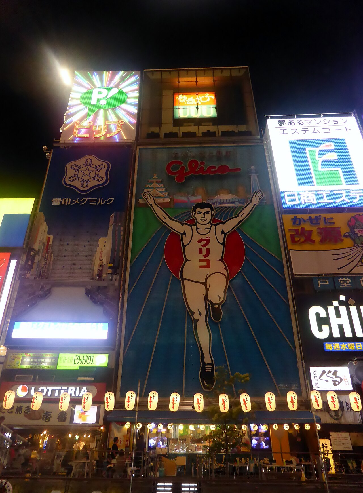
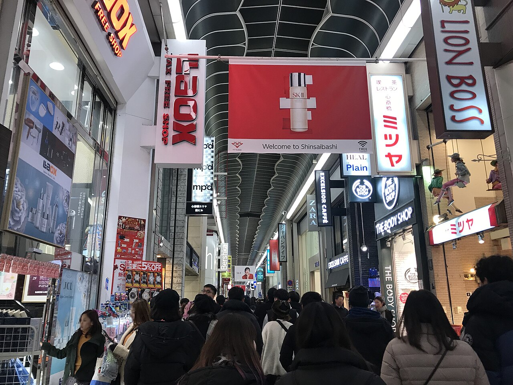
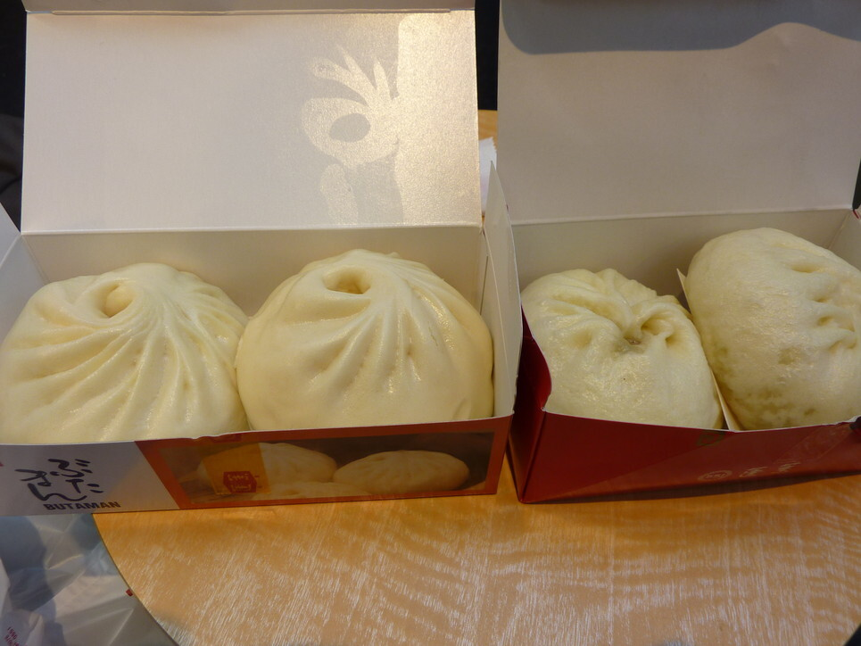
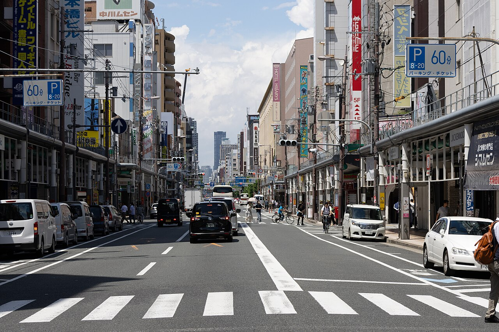
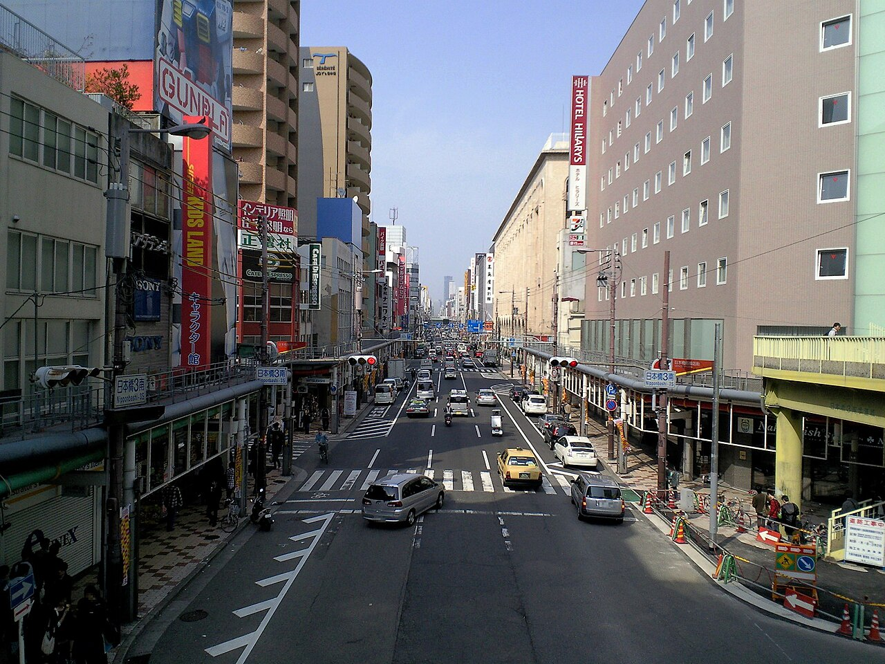
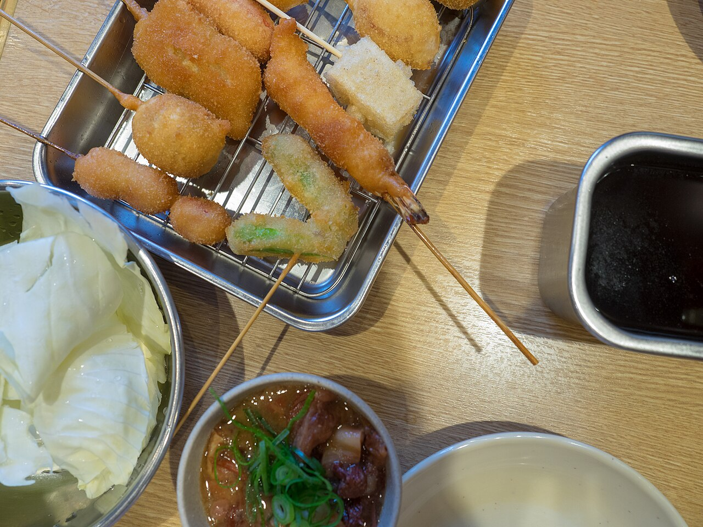
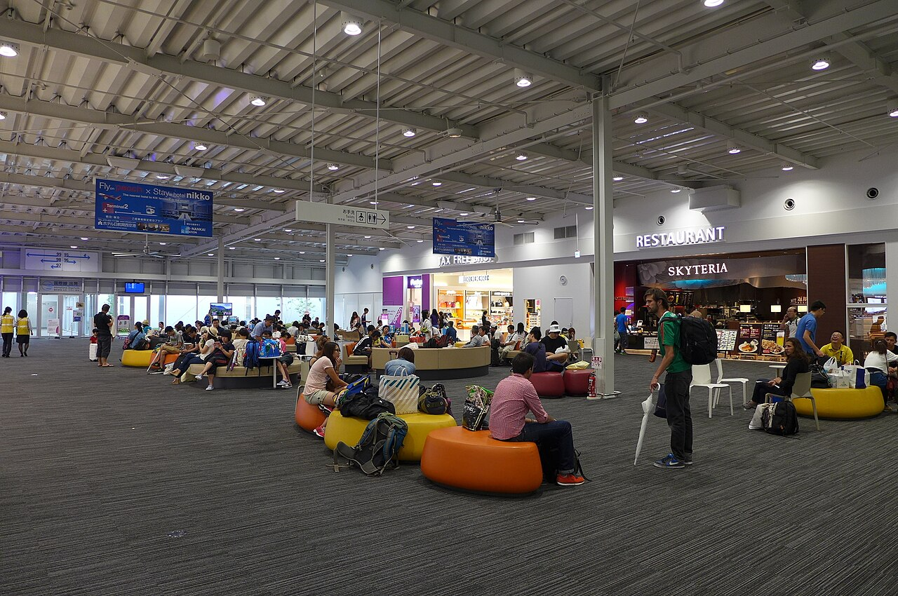

일본편 EP.1 · OSAKA
집중소해외 진출하다!
먹고, 걷고, 즐기는 오사카 2박 3일 🍜
12.19 SAT → 12.21 MON 3 FRIENDS · 3 DAYS IN OSAKA
#맛집탐방#유명관광지#쇼핑#야경#이자카야
📷 사진을 누르면 크게 볼 수 있어요
TRAVEL HIGHLIGHTS오사카의 대표 번화가를 걸으며 현지 음식을 즐기고, 개성 있는 쇼핑거리와 전통 풍경, 현대적인 야경까지 경험하는 여행.

도톤보리 글리코상 🏃
 타코야키 냠
타코야키 냠
 츠텐카쿠
츠텐카쿠
(설렘 MAX)
食い倒れ 각오 완료
오프닝. 제목은 예능 자막 느낌으로 크게 읽어주기. 여행 기간, 인원, 숙소, 테마 소개.
집중소 EP.1TRAVEL INFO02
출국 준비 완료?!
TRAVEL INFORMATION
⭐ 이번 여행의 특징
1시내 중심 관광, 이동 부담 최소화
2다양한 음식 경험, 맛집 중심 일정
3쇼핑거리 + 인기 관광지 함께 탐방
4마지막 날은 공항 고려한 여유 일정
🔑
OUR BASE CAMP
에스리드 호텔
난바 다이코쿠초
CHECK-IN15:00
CHECK-OUT10:00
- 다이코쿠초역 도보 약 2~3분 🚶
- 오사카 중심 번화가 난바와 가까움
- 지하철 미도스지선 · 요츠바시선 이용 가능
- 냉장고 · 전자레인지 · 세탁기 구비
🛏 3인 1실 생존 규칙
- 샤워 순서는 가위바위보 ✊✌️🖐
- 늦잠러 깨우기 당번 지정 ⏰
- 빨래는 몰아서 한 번에! 🧺
집중소 EP.13 DAYS ITINERARY03
2박 3일 전체 코스
3 DAYS ITINERARY
난바 · 신사이바시 · 도톤보리
오사카 첫인상과 대표 먹거리 탐방
- 간사이공항 도착 ✈
- 호텔 체크인
- 센니치마에
- 신사이바시 쇼핑거리
- 미도스지 일루미네이션 ✨
- 도톤보리
- 이자카야 🍻
니폰바시 · 신세카이 · 텐노지
개성 있는 거리와 전망대 관광
- 니폰바시 쇼핑거리
- 신세카이
- 츠텐카쿠
- 아베노 하루카스 300 🌇
- 난바 야키니쿠 🥩
- 자유시간
난바 · 간사이공항
마지막 현지 식사와 짧은 관광
- 체크아웃
- 난바 야사카 신사 🦁
- 난바 점심 🍜
- 간사이공항
- 귀국 🏠
🕹 운영 방식
오전엔 무리 NO → 오후부터 관광지·맛집 집중 → 저녁엔 야경·먹거리·술집을 여유롭게!
집중소 EP.1DAY 1 · 12.19 SAT⏰16:30 ~ 19:3004
난바 & 신사이바시
OSAKA'S MAIN SHOPPING DISTRICT
1난바 NAMBA
오사카 남부의 쇼핑·음식·엔터 중심지
- 음식점·백화점·쇼핑몰 밀집
- 화려한 간판과 거리 분위기
- 도톤보리·센니치마에와 연결
2센니치마에 SENNICHIMAE
대표 음식과 상점이 모인 번화가
- 오코노미야키·타코야키 맛보기
- 난바 그랜드 가게츠 주변 구경
- 첫날 식사 장소로 접근성 굿
3신사이바시 SHINSAIBASHI
오사카 대표 대형 쇼핑 지역
- 의류·화장품·스니커즈·잡화
- 신사이바시스지 상점가 · 다이마루
- 일본 한정 굿즈 & 기념품
4미도스지 일루미네이션
겨울에만 볼 수 있는 대규모 조명 행사 ✨
- 2026.11.3 ~ 12.31
- 거리 전체를 수놓는 조명
- 무료 겨울 야경 산책
📸 추천 사진
신사이바시 상점가 전경미도스지 크리스마스 조명난바 거리

신사이바시스지 상점가 🛍
 미도스지 일루미네이션 🎄
미도스지 일루미네이션 🎄
(지갑 주의 ⚠️)
FREE!
집중소 EP.1DAY 1 · 12.19 SAT⏰19:30 ~ 23:0005
도톤보리 먹방 투어
WELCOME TO DOTONBORI
🏃 도톤보리 DOTONBORI
- 오사카 상징 글리코상 네온사인
- 도톤보리강 따라 펼쳐지는 야경
- 대형 입체 간판 · 기념품 · 음식점
- 에비스바시에서 단체 사진 📸
오사카 먹킷리스트 BEST 4
 01¥1,200~2,000
01¥1,200~2,000오코노미야키
양배추·고기를 철판에 구운 오사카식 요리. 진한 소스 + 마요 조합!
유카리 센니치마에점
02¥700~1,100
타코야키
겉은 살짝 바삭, 속은 부드러운 오사카 대표 길거리 문어볼.
타코야키 와나카

032개 ¥460~500551 부타만
돼지고기·양파 듬뿍 큼직한 일본식 찐빵. 오사카 국민 간식.
551 호라이 난바 본점
 041품 ¥410
041품 ¥410야키토리 & 이자카야
닭꼬치 + 맥주 🍺 3명이 여러 메뉴 공유하기 딱!
토리키조쿠 도톤보리점
DAY 1 핵심
17:00오코노미야키18:00간식18:30신사이바시19:30도톤보리21:00이자카야 🍻
(배고픔 주의)
집중소 EP.1DAY 2 · 12.20 SUN⏰11:00 ~ 13:1506
니폰바시 덴덴타운
DISCOVER NIPPONBASHI

덴덴타운 / 오타로드 🎮

니폰바시 전자상가
오사카판 아키하바라!
오사카를 대표하는 전자상가이자 독특한 대중문화 쇼핑 지역. 도쿄 아키하바라와 함께 일본의 전자제품·취미용품·캐릭터 문화를 경험할 수 있는 거리.
🔌 전자제품 & 디지털 기기
- 일본 전자제품 · 주변기기
- 중고 IT 기기 · 소형 가전 · 오디오
🧸 취미 · 컬렉션 문화
- 피규어 및 캐릭터 상품 전문점
- 중고 게임과 오래된 전자기기
- 수집품 · 트레이딩카드 상점
🚶 쇼핑 & 거리 탐방
- 좁은 골목마다 모인 전문 매장
- 오타로드 따라 자유롭게 구경
💡 추천 방문 방식 2시간 이상 자유 쇼핑 + 오래된 일본 상점가 분위기 느끼기
집중소 EP.1DAY 2 · 12.20 SUN⏰13:30 ~ 15:3007
신세카이 & 츠텐카쿠
THE CLASSIC OSAKA
1신세카이
옛 오사카 분위기가 살아 있는 개성 강한 동네
- 복고풍 상점과 커다란 음식점 간판
- 일본 특유의 정겨운 골목 풍경
- 쿠시카츠 전문점·이자카야 밀집
- 서민적인 음식 문화 체험
 신세카이 밤 풍경
신세카이 밤 풍경2츠텐카쿠
신세카이 중심의 상징적인 전망탑
- 1956년 완성된 현재의 탑
- 신세카이를 대표하는 랜드마크
- 탑 배경 기념사진 📸
- 이번엔 외관 + 주변 거리 위주 관광
TSUTENKAKU

LUNCH1인 ¥1,500~2,500
③ 점심 — 쿠시카츠
고기·채소·해산물을 튀긴 일본식 꼬치 요리
쿠시카츠 다루마 or 신세카이 주변 전문점
소고기돼지고기새우연근도테야키
🚫 二度漬け禁止!
공용 소스에 두 번 찍기 금지! 한 입 먹고 다시 찍으면 안 돼요 😱
🚶 방문 포인트 니폰바시 쇼핑 후 걸어서 신세카이로 → 복고 거리 + 현지 음식 한 번에!
집중소 EP.1DAY 2 · 12.20 SUN⏰16:00 ~ 17:3008
하루카스에서 노을 보기
SUNSET OVER OSAKA
🌇 아베노 하루카스 300
- 높이 300m 빌딩의 58~60층 전망 공간
- 통유리 너머 도시 전경
- 낮 풍경 → 일몰 → 야경 한 번에
🎯 방문 전략
해 지기 전 풍경부터 야경까지 감상!
웹 예매 필수! ¥220 아끼기 💸
 DINNER90분 ¥3,718
DINNER90분 ¥3,718🥩 난바 야키니쿠
전망대 → 난바 복귀 → 일본식 고기구이! 다양한 부위 무한리필 스탠다드 코스 (음료 별도)
야키니쿠 리키마루
🌙 20시 이후 자유시간
난바 산책이자카야라멘·편의점 야식돈키호테
DAY 2 핵심
10:30숙소 출발11:00니폰바시13:30신세카이16:00하루카스18:30야키니쿠20:00자유시간
집중소 EP.1DAY 3 · 12.21 MON09
마지막 아침, 오사카
THE LAST MORNING IN OSAKA
1난바 야사카 신사 NAMBA YASAKA SHRINE
- 약 12m 사자머리 건축물 '시시덴'
- 악운 퇴치 · 승리와 행운 기원
- 전통 신사 × 독특한 건축 디자인
- 무료 사진 명소 📸
2마지막 점심은? 메뉴 룰렛 🎰
우동(가쓰오·다시 육수) · 소바(담백) · 대안: 라멘 · 돈카츠 · 규동
오늘의 점심은…?
3간사이공항 이동
공항급행 약 45분 / 라피트 35~40분
무료 셔틀
DAY 3
09:30기상10:00체크아웃10:30신사11:10점심12:00난바역13:00~T2 도착
※ 레이트 체크아웃이 되면 10:00 기상, 10:30 숙소 출발로 변경 가능
집중소 EP.1TRAVEL BUDGET10
얼마 들까? 💴
TRAVEL BUDGET · 1인 기준 / 항공·숙박 제외
OSAKA TRIP 2026
집중소 상점 · 12.19 – 12.21 · 1인 영수증
🍜 DAY 1 식비¥3,500~6,000
🥩 DAY 2 식비¥5,000~8,000
🍲 DAY 3 식비¥800~1,500
🌇 하루카스 300¥1,980~2,200
🚃 교통비¥3,000~5,000
TOTAL 총 예상¥14,280~22,700
ありがとう ございました! 🙇
🛒 별도 지출
쇼핑 · 기념품추가 음주 · 야식카페 · 디저트기타 입장권
🧭 예산 운영 방향
- 고급 식당보다 합리적인 현지 맛집 위주
- 여러 음식 나눠 주문해서 다양하게!
- 웨이팅 너무 길면 주변 대체 맛집으로
- 쇼핑 & 자유시간은 개인별 지출
👯
3명 합치면?
¥42,840 ~ 68,100
1인 예상 × 3 (쇼핑·추가 지출 제외)
더치페이 정산은 그날그날! 🧾
집중소 EP.1BEFORE WE GO11
출발 전 체크!
BEFORE WE GO · 눌러서 체크해 보세요
🚃 교통
- 공항 ↔ 난바는 난카이선
- 시내는 지하철 + 도보 병행
- 관광지는 지역별로 묶어 이동시간 최소화

KANSAI AIRPORT🎒 여행 준비
- 여권 및 항공편 확인 🛂
- 해외 결제 카드 + 소액 엔화 💳
- eSIM 또는 로밍 📶
- 12월 방한 의류 🧣
- 편하게 걸을 수 있는 신발 👟
📌 미리 확인할 것
- 하루카스 300 입장권 (웹 예매)
- 일요일 저녁 야키니쿠 예약
- 호텔 체크아웃 & 짐 보관
- 귀국일 공항철도 시간
OUR OSAKA TRIP
많이 걷고,
맛있게 먹고,
추억 남기기!
3일 동안 즐기는 오사카의 대표 음식, 개성 있는 거리, 유명 관광지와 겨울 야경.
To be continued… 일본편 EP.2 ? ✈️